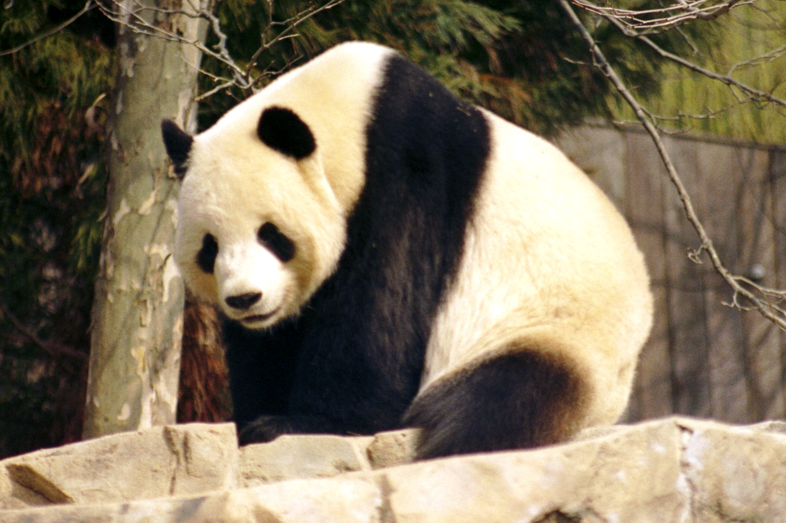

Giant Panda
Scientific name: Ailuropoda melanoleuca
Vulnerable
Common name: Giant Panda
Scientific name: Ailuropoda melanoleuca
Conservation status: Vulnerable
Primary range: Mountain forests of central China
Diet: Bamboo, with small amounts of other foods
About the Giant Panda
Giant pandas, also known simply as pandas, are one of the world’s rarest mammals. Currently, there are only about 1,500 giant pandas in the wild.
Due to their shy nature, giant pandas don’t wander into environments inhabited by humans. In the areas where they do reside, they spend a lot of time climbing, swimming, and doing handstands against trees.
Habitat and Range
In the mountains of southwestern China, giant pandas are found in damp, misty forests. Giant pandas need old-growth conifer forests with at least two kinds of bamboo and access to water.
Old-growth forests provide materials for panda dens, such as large tree stumps. Pandas’ home ranges are somewhat larger where food is not as abundant.
Habitat Characteristics:
- Home range is 3-7 square miles
- Live in elevations between 4,000 and 11,500 feet
Physical Characteristics
The giant panda species ranges from 4 to 5 feet tall and weighs up to 300 pounds. They have a thick, woolly coat that protects them from the cold climate of their mountainous habitat.
Common physical attributes:
- Black and white coat
- Broad, flat molar teeth
- Enlarged wrist bone that functions as an opposable thumb
Diet and Behavior
Although they eat grasses, fruits, and some insects, nearly all of a giant panda’s diet consists of bamboo. Giant pandas spend at least 12 hours a day eating bamboo and digest about one-fifth of what they eat.
Behavior:
- Pandas are not very social animals and only seek out other pandas in spring for mating season
- Their teeth are used to peel off the tough outer layers of bamboo
Major Threats
Unfortunately, giant pandas now inhabit only a fraction of their historical range in central China due to the threats they face. Giant pandas live in around 33 subpopulations, some of which have only 10 individuals in total.
Threats Giant Pandas Face:
- Habitat loss
- Hunting
- Climate change
Conservation Efforts
For over 50 years, Smithsonian scientists have partnered with Chinese colleagues on important research to protect pandas. In 2016, the International Union for Conservation of Nature announced that the giant panda was downlisted from “endangered” to “vulnerable” on the global species-at-risk list, showing that efforts to protect them have not been in vain.
Conservation Efforts That Have Been and Can Be Taken:
- Halting the Spread of Deadly Diseases
- Restoring Giant Panda Habitat
- Using Reproductive Science to Increase Population Diversity
Why the Giant Panda Matters
Pandas play an important role in China’s bamboo forests by distributing seeds and encouraging the growth of vegetation. In addition, panda habitats are home to other species, such as sheep and pheasants, so protecting pandas can also help protect other animals.
As the national symbol of China, pandas are economically and culturally valuable. Giant pandas generate significant economic benefits for local communities through activities such as ecotourism.
Conservation Challenges
Even though giant panda populations have increased in recent years, the species still faces threats to its survival. New roads continue to be built through their habitats, causing habitat loss and fragmentation.
Challenges They Face:
- Harvesting
- Tourism
- Logging
Sources
National Geographic Kids — Giant Panda
San Diego Zoo Wildlife Alliance — Giant Panda
World Wildlife Fund — How big, tall and heavy are pandas?
World Wildlife Fund — Why should we save the giant panda?
World Wildlife Fund — Giant Panda Threats